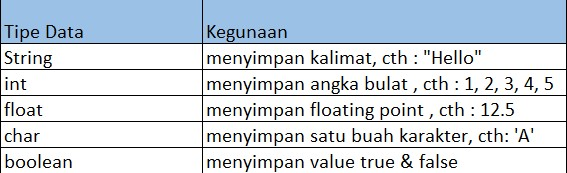

Variabel & Tipe Data Primitve
Variabel dalam bahasa pemrograman adalah tempat atau wadah yang di beri nama untuk menyimpan sebuah nilai dengan tipe data tertentu.
Jenis - jenis tipe data variabel :
Cara mendeklarasi variabel :
tipeData namaVariable = value
Contoh:
int a = 5
Contoh penggunaan variabel:
public class Main {
public static void main(String[] args) {
int a = 5;
double b = 3.4;
boolean c = false;
System.out.println(a);
System.out.println(b);
System.out.println(c);
}
}
Output:
5
3.4
false
Tipe Data Primitive
Berikut beberapa contoh tipe-tipe data di dalam java:

Tipe data di dalam java dibagi menjadi dua yaitu primitive dan non-primitive

Perbedaan |
Primitive |
Non-primitive |
|---|---|---|
Passing Data |
Menyimpan nilai yang sebenarnya (pass by value) dalam sebuah method |
Menyimpan Alamat ke alokasi memori (pass by reference) dalam sebuah method |
Nilai Default |
memiliki nilai default apabila tidak di inisialisasi, cth : int = 0 |
Memiliki nilai default “null” |
Penulisan |
Di awali dengan huruf kecil |
Di awali dengan huruf besar |